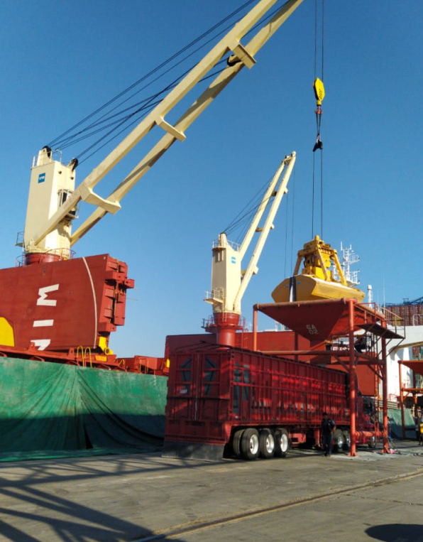
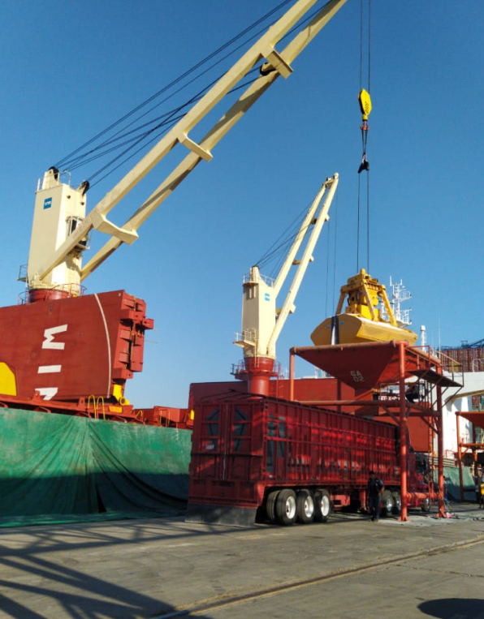
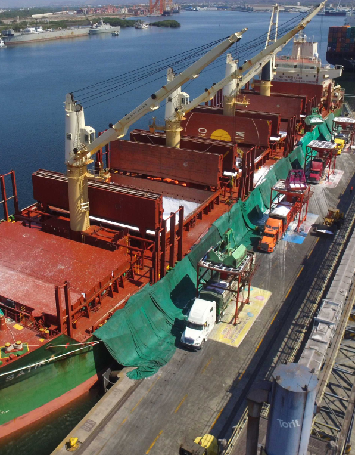
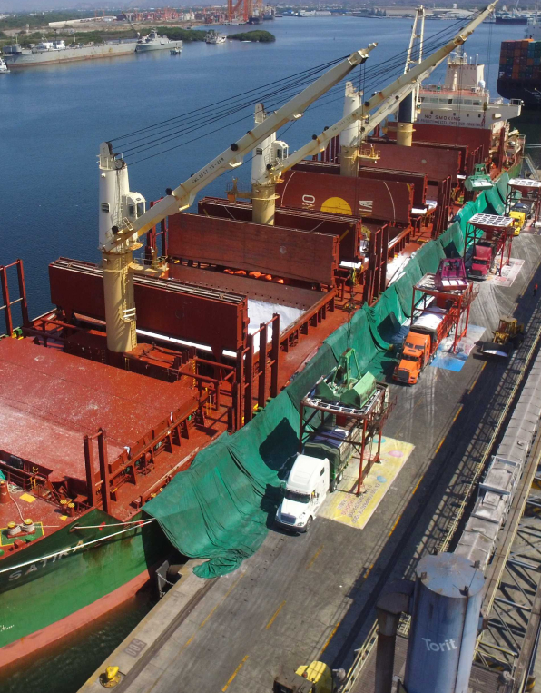

¿QUIÉNES
SOMOS?
Somos una empresa integradora de servicios portuarios en materia de comercio exterior con más de 35 años de experiencia. Con amplia experiencia en el manejo de todo tipo de mercancías ya sea en importación y exportación del país. Contamos con una amplia red logística en los principales puertos del país, ofreciendo un servicio personalizado, eficiente e integral. Somos una empresa con certificado ISO 9001 : 2015 en Gestión en los servicios portuarios de supervisión y reexpedición de mercancías (No. Certificado: MX21.00150)
POLITICA DE CALIDAD
texto
MISIÓN
Somos una empresa dedicada a brindar Servicio de Supervisión y Reexpedición de mercancías a nuestros clientes, buscando contribuir al éxito mediante una constante comunicación entre nuestros colaboradores y clientes, respaldando la tranquilidad y satisfacción de contar con una empresa eficiente, segura y confiable.
VISIÓN
texto
¿Qué hacemos?
NUESTROS SERVICIOS
MANIOBRAS
Especialista en el manejo de cargas general y sobredimensionadas, graneles agrícola y mineral, vehículos y todo tipo de aceros.
AGENCIA ADUANAL
Especialista en el manejo de cargas general y sobredimensionadas, graneles agrícola y mineral, vehículos y todo tipo de aceros.
AGENCIA CONSIGNATARIA
Agente Naviero Consignatario, General, Protector y de Carga.
OTROS
Ofrecemos diversos servicios complementarios que cubren toda la cadena logística de tus mercancías.
MANIOBRAS
TODO TIPO DE MERCANCÍAS
- Presencia en los puertos de: Manzanillo, Topolobampo, Ensenada y Tampico.
- Especialista en el manejo de cargas general y sobredimensionadas, graneles agrícola y mineral, vehículos y todo tipo de aceros.
- Supervisión y Reexpedición de mercancías.
- Almacenaje dentro y fuera de los Puertos.
- Pesaje.
- Consolidación y manejo de carga contenerizada.
- Envasado.
 

AGENCIA ADUANAL
IMPORTACIÓN & EXPORTACIÓN
- Ofrecemos servicio de agencia aduanal por medio de nuestras oficinas en los puertos de Manzanillo, Topolobampo, Mazatlán, Tampico, Altamira, Veracruz y Coatzacoalcos.
- Contamos con servicio de despacho de importación y exportación de carga a granel, contenedores y carga general.
- Somos especialistas en el manejo de fertilizantes, rollos de acero, minerales y azúcar.
- Seguimiento personalizado en cada operación, revisión de documentos, supervisión y coordinación de embarques.
- Servicio de consultoría en clasificación arancelaria, en regulaciones y restricciones no arancelarias.
- Ofrecemos servicios de transporte terrestre, custodia y seguro de mercancía.
AGENTE CONSIGNATARIO
AGENTE NAVIERO
- Agente Naviero Consignatario, General, Protector y de Carga.
- Cobertura Nacional.
- Supervisores.
- Coordinadores Logísticos.
- Atención a Tripulantes y Refacciones.
- Avituallamiento.
- Combustibles.
- Asesoría.
 

AGENTE CONSIGNATARIO
AGENTE NAVIERO
- Almacenes externos
- Patio Regulador
- Amarradores
- Recolección de basuras
- Lanchaje
- Abanderamiento
- FCL/LCL
- Limpieza y reparación de contenedores
- Certificación de trincado
- Carga suelta
- Resguardo, segregación, inventario y etiquetados
- Distribución y Re-expedición